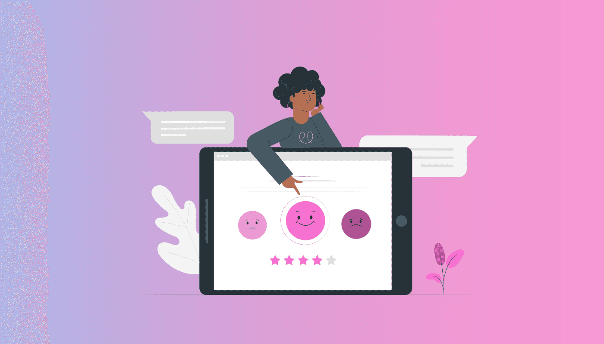
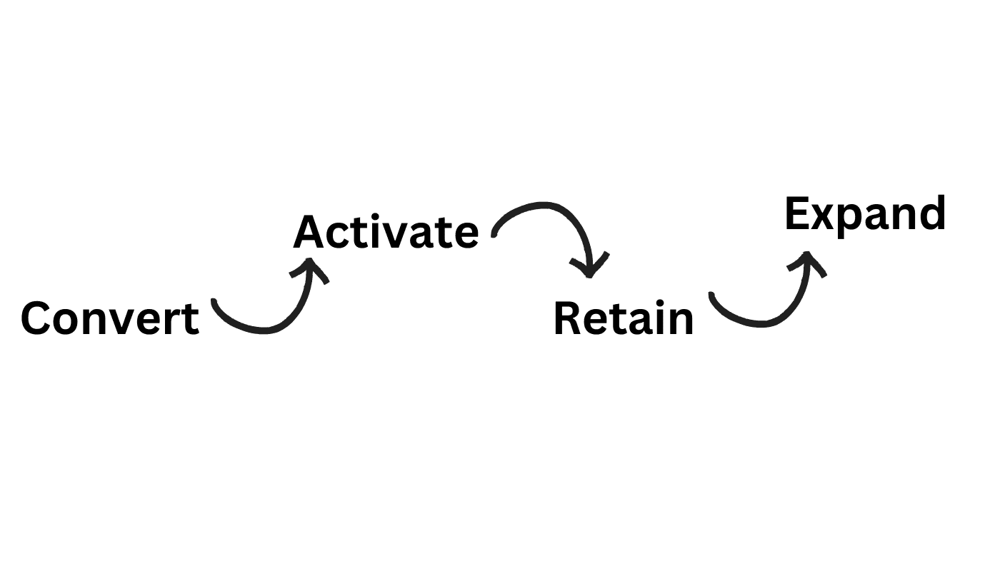
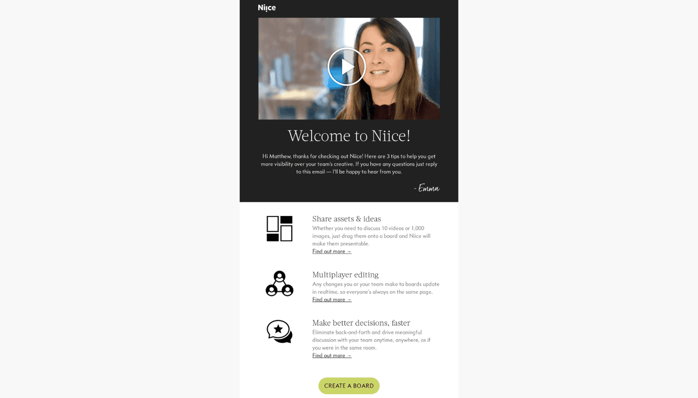
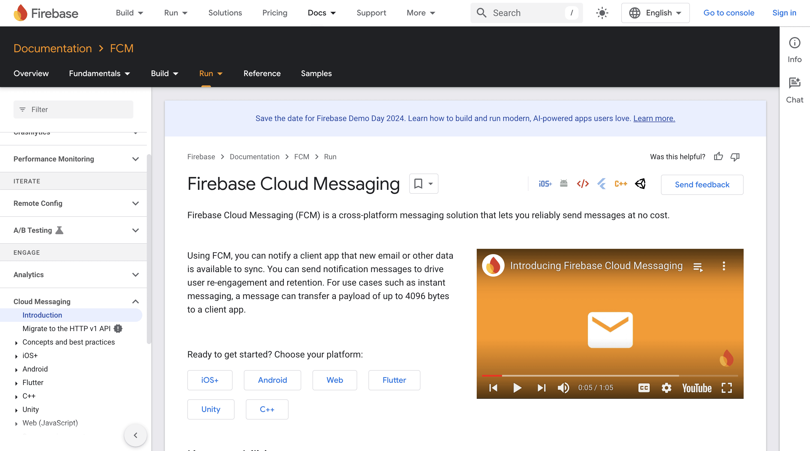
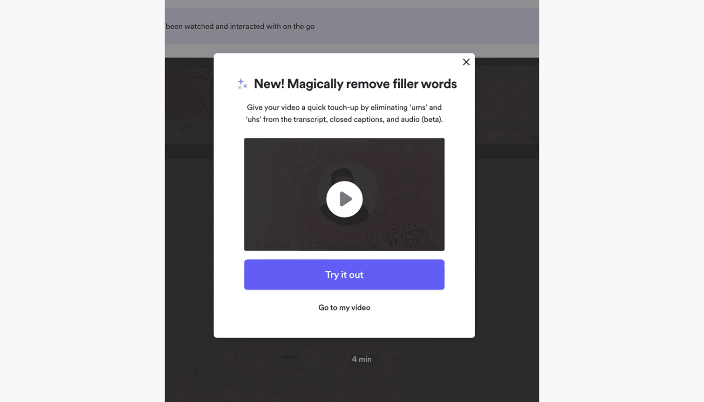
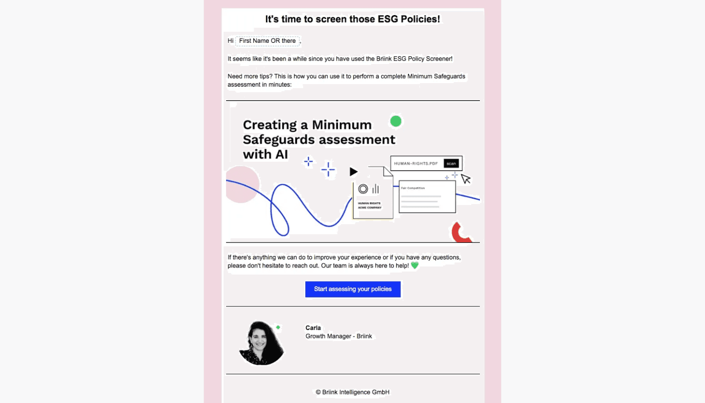
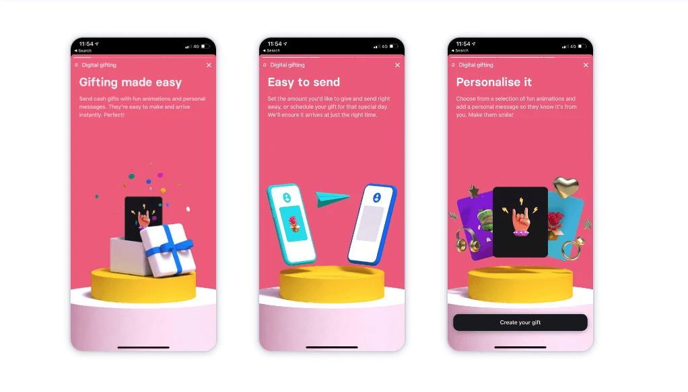
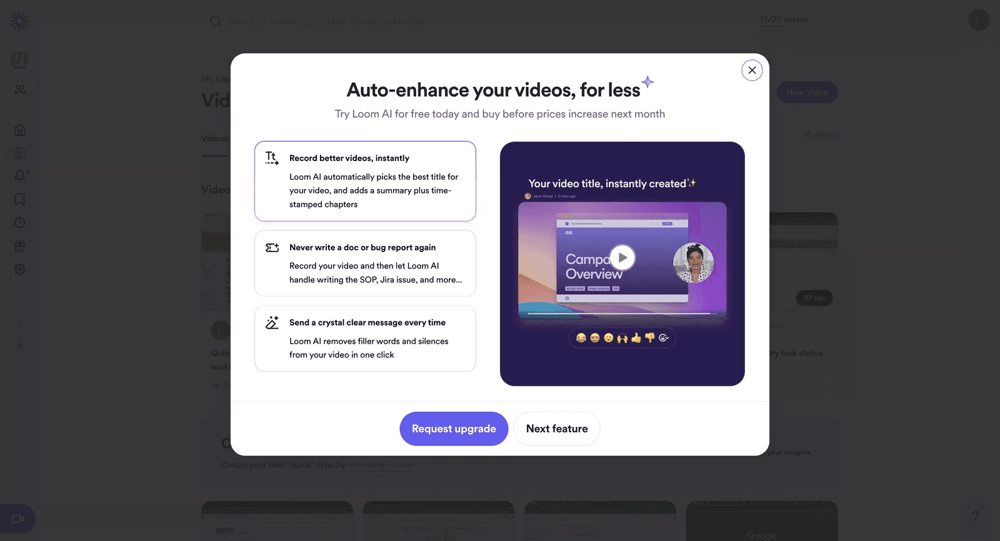

Why short videos are the future of SaaS customer onboarding

Ready for a change? Your customers already are.
Did you know that during the digital onboarding process, the average time it takes for customers to abandon an application is just 14 minutes and 20 seconds? This makes onboarding one of the most critical stages in a SaaS customer journey. Get it right, and users will stick around for the long haul. Get it wrong, and you risk losing them before they've even fully explored your product.
In an effort to improve it, many businesses end up overwhelming us with intrusive popups and ineffective chatbots, which only lead to frustration and a negative experience. It's time to admit that users are smarter and more tech-savvy than ever, using many digital tools every day. That's why a new approach is needed.
What's wrong with old methods?
Traditional onboarding methods like tooltips, product tours, support chats, checklists, and surveys are starting to feel like that one overly eager coworker who's always offering unsolicited advice—helpful, but a bit much. Tooltips bombard users with info overload, leaving them more confused than before. Product tours? They're like that one friend who tells you the entire plot of a movie before you watch it—way too much, and you still don't know why it matters. Support chat is like waiting on hold with customer service—slow and frustrating, making you wonder if you're actually learning anything. Checklists are the "get in, get out" approach—simple, but lacking any real excitement or context. And surveys? They pop up like surprise parties, only no one's actually interested in attending, leaving you with incomplete feedback.
It may sound like a miracle, but video is the ultimate tool that addresses multiple challenges and can significantly improve your SaaS customer onboarding.
Why? Because they engage both visual and auditory senses, making it easier for users to understand and retain information. Research shows that people remember up to 95% of a video's message, compared to just 10% of text-based information. It's important to know that the average attention span for online videos is about 2.7 minutes, which means that short videos are ideal for onboarding. Additionally, videos also capture attention with dynamic graphics, keeping users engaged and helping them connect more deeply with the content. By showcasing tone, personality, and brand values, videos build an emotional connection that strengthens the relationship with the product.
Before diving into the vibrant world of video content, let's focus on building a solid strategy
Onboarding a new corporate client often takes up to 100 days, making a strategy essential to manage the process effectively. A customer onboarding strategy is a structured plan that guides new customers through the process of learning and adopting your product or service. One of the frameworks that can be used is the C.A.R.E. onboarding framework by Intercom that emphasizes four key stages:
Stage 1: Convert users
Goal: Help users navigate their first experience with the product.
When new users sign up, they rely on your guidance to understand how the product works. This makes your first impression critical, as it sets the tone for their entire experience. A well-structured onboarding process ensures users quickly grasp the product's value and feel confident in using it.
welcome email
You're familiar with the standard "Thanks for signing up for XYZ" email, right? Adding a personalized video to this welcome email can enhance the experience and boost user interest right from the start. Video makes the message more engaging and adds a warm, human touch that can help new users connect with your brand instantly. For instance, here's how Niice's welcome email looks like:

onboarding walkthrough
Video onboarding is an effective way to welcome trial users, showcasing key benefits and setting clear expectations. Unlike long product tours, quick "getting started" videos offer a straightforward, engaging introduction to essential features, helping users quickly feel at home. For example, Asana created a tutorial that consists of 6 short videos.

Stage 2: Activate users
Goal: Help customers reach their "aha" moment, where they clearly see the value in your product.
Think of onboarding as your personal tour guide, helping users stumble upon that magical moment when they realize, "Wait, this is actually useful!" It's like showing someone how to use a fork and knife and watching their eyes light up when they realize they don't have to eat spaghetti with their hands. That's the sweet spot you're aiming for.
in-app tutorial
An in-app tutorial is an interactive guide that overlays your interface, offering real-time instructions within the product. It can include video walkthroughs to engage users by showing them how key features work. Firebase uses these tutorials to provide step-by-step guidance, ensuring users gain practical experience and easily understand the product's value.

Stage 3: Retain users/deepen usage
Goal: Showcase more value to retain users.
The beginning of a user's journey with your product can be exciting, but maintaining their engagement long-term is crucial. After users are activated and experience value, it's essential to keep them invested. If you're not consistently demonstrating how your product continues to deliver value, you're leaving room for competitors to entice them away. The key to strong onboarding is not just initial activation, but ensuring users are continually shown how to maximize the value of your product to foster long-term loyalty.
key features in-app messaging
Loom uses a pop-up modal with a brief, targeted tutorial video to introduce a premium feature and encourage users to try it. The video is concise, direct, and features a human face, adding a personal touch to the interaction. This is a great example of leveraging video to engage users and promote feature upgrades effectively.

gentle re-engagement email
Briink is sending re-engagement emails to users who haven't returned after a period of inactivity. This creates an opportunity to deepen engagement and increase revenue by tailoring recommendations to their needs.

new feature onboarding
When releasing a new product update, guiding users through new feature onboarding is crucial to help them find and appreciate its value. Effective onboarding not only boosts feature adoption and user retention but also reduces the load on support teams. That's, for instance, how Mailchimp is doing it:

user tips & tricks
Quick tips that can be sent via email or embedded in-app to boost user skills. Revolut uses story-style content in its mobile app to boost engagement and interaction. These stories cover product updates, financial tips, and special offers through visually engaging, interactive formats. This approach not only makes key information easily accessible but also aligns with the quick consumption preferences of mobile users, enriching their overall app experience.

upsell message
When users hit the usage limits of your product, triggering an automatic upsell message is a smart move. This message should clearly highlight the additional value they'll get by upgrading. Loom, for example, combines text and video in their upsell approach, showcasing their new AI feature to engage users and demonstrate how the upgrade can enhance their experience. This strategy effectively communicates the benefits while keeping users informed and motivated to level up.
